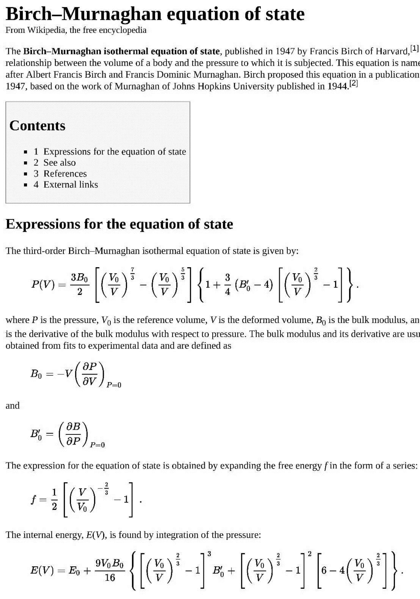

应力计算
查看应力：
grep 'in kB' OUTCAR |tail -1常用批处理命令
for i in $seq(0.9 0.01 1.1);do cp -r ori/ $i/;donefor i in $seq(0.9 0.01 1.1);do sed -i "2s/1.0/$i/g" $i/POSCAR;done计算流程1：
- 更改晶胞参数，设置ISIF=2，优化完成后算一个单点能，读取OUTCAR中受力即可
- 后面想比d-band center还是啥都依照其他方案对每个最后的结构做一个单点计算即可
- 问题：这里初始的晶格参数是取计算结果还是实验结果（计算结果在有的体系中如前面所言对晶格参数预测差别很大）
计算流程2：（Birch-Murnaghan状态方程 ）
理论背景：

如何获取晶格参数： $$ E(a)=E{0}+\frac{9 \mathrm{V}{0} \mathrm{B}{0}}{16}\left{\left[\left(\frac{\mathrm{a}{0}}{\mathrm{a}}\right)^{2}-1\right]^{3} \mathrm{B}{0}^{\prime}+\left[\left(\frac{\mathrm{a}{0}}{\mathrm{a}}\right)^{2}-1\right]^{2}\left[6-4\left(\frac{\mathrm{a}_{0}}{\mathrm{a}}\right)^{2}\right]\right} $$ $y(x) = c_0 + c_1 x + c_2 x^2 +c_3 x^3$ 的形式，E0, B ,B ’和V 等写进$c_0$ ,$c_1$ ,$c_2$ 和$c_3$这些常数里面，它们的具体形式此时并不重要，我们需要做的就是拟合这样的曲线去寻找x的最小值。对y(x)这个方程 求导数，dy(x)/dx = 0 的时候，便可以获取能量最低时的x值了，再由(1/a) = x 获得晶格参数
批量计算
for i in 0.95 0.96 0.97 0.98 0.99 1.01 1.02 1.03 1.04 1.05; do cp 1.00 $i ; sed -i "2s/1.0/$i/g" $i/POSCAR ; done数据提取：
for i in *; do echo -e $i "\t" $(grep ' without' $i/OUTCAR | tail -n 1| awk '{print $7}'); done > data
计算流程3：固定受力的应力计算（ref：https://zhuanlan.zhihu.com/p/32862436）
```python
!/usr/bin/python
PBS -l nodes=6:ppn=12
PBS -l walltime=3:00:00
PBS -V
PBS -N test
''' Instructions:
- Input the pressure (stress) tensor in the script(see below)
- Input estimated elastic modulus in the script
- Set ISIF=2 in the INCAR
- Copy POSCAR to poscar.0
- Configurate mpiexec commands in the script according to your VASP directory and job management system
- cd to job directory and use 'qsub fixpressure.py' to submit your job
Suggestions for accurate force calculation: Use a high ECUT and k-points density. See VASP manual for details. Use PREC=High or Accurate
Suggestions for better computational efficiency: Use LWAVE=.T. and default ISTART and ICHARG
General algorithm:
- run vasp with ISIF=2 to get current pressure tensor
- using generalized Hooke's law and elastic modulus you input, estimate the POSCAR modification required to get target pressure
- repeat 1-2 until the current pressure - target pressure is within convergency criteria Should you find any bug, please contact the author '''
import sys,os import subprocess import shutil import string import numpy as np import linecache
#################You need to configurate the following variables
Setpress= np.array([120,0,0,0,0,0])
Set the pressure tensor (xx yy zz xy yz zx) in kB. Note pressure=-stress in VASP
presscirt= 0.1
convergency criteria for pressure, unit in kB
E=2790
Young's modulus in kB
v=0.21
Possion ratio
G=E/(2+2*v)
Shear modulus in kB
imax=30
maximum iteration cycles
mpiexec='mpiexec -n
cat $PBS_NODEFILE | wc -l/gs/project/emm-484-aa/jiehou/software/vasp54/vasp_std > results.txt'directory of your VASP program
os.chdir(os.getenv('PBS_O_WORKDIR', ''))
these PBS command may depend on your job management system.
#
##do not alter the following codes unless you know what you are doing
shutil.copy ('poscar.0','POSCAR') subprocess.call("echo 'starting calculation' > pressure.all", shell=True) subprocess.call(mpiexec, shell=True)
initial run to calculate pressure tensor
subprocess.call("cat OSZICAR > oszicar.all", shell=True) subprocess.call("cat OUTCAR > outcar.all", shell=True) subprocess.call("grep 'Total CPU time used (sec):' OUTCAR | tail -n 1 > end.txt", shell=True)
iteration=0 while iteration<=imax: iteration=iteration+1 P_coeff=1-iteration*1.0/imax
graduately reduce P_coeff to avoid flucations in convergency
print 'iteration=',iteration subprocess.call("grep 'Total CPU time used (sec):' OUTCAR | tail -n 1 > end.txt", shell=True) notempty=os.path.getsize('end.txt') os.remove('end.txt')
scan if the previous calculation is completed
if notempty:
subprocess.call(" grep 'in kB' OUTCAR | tail -n 1 > pressure.txt", shell=True)
subprocess.call(" grep 'in kB' OUTCAR | tail -n 1 >> pressure.all", shell=True)
for line in open("pressure.txt"):
press=np.array([ float(x) for x in line.split()[2:]])
print 'pressure=',press
os.remove('pressure.txt')
#read pressure from OUTCAR
addpress=Setpress-press[0:6]
print 'adding pressure:',addpress
#calculate the additional pressure needed to achieve Setpress
abs_P=max([abs(y) for y in addpress])
if (abs_P<presscirt):
subprocess.call("echo 'aborting calculation for the convergence is reached' >> pressure.all", shell=True)
break
#stop if the additional pressure is too small
else:
#copy CONTCAR to POSCAR,
shutil.copy ('CONTCAR','POSCAR')
POS=linecache.getlines('POSCAR')
M=np.zeros((3,3))
addM=np.zeros((3,3))
M[0,:]=np.array([float(x) for x in POS[2].split()])
M[1,:]=np.array([float(x) for x in POS[3].split()])
M[2,:]=np.array([float(x) for x in POS[4].split()])
#read current POSCAR matrix
addM[0,0]=(addpress[0]-v*(addpress[1]+addpress[2]))/(-E)
addM[1,1]=(addpress[1]-v*(addpress[0]+addpress[2]))/(-E)
addM[2,2]=(addpress[2]-v*(addpress[1]+addpress[0]))/(-E)
addM[0,1]=addM[1,0]=addpress[3]/(-G)/2
addM[1,2]=addM[2,1]=addpress[4]/(-G)/2
addM[0,2]=addM[2,0]=addpress[5]/(-G)/2
#calculate how much strain we need to add according to addpress
#beware that VASP defines compressive pressure as positive, hence /E becomes /(-E) and /G becomes /(-G)
addM=np.diag([1,1,1])+addM*P_coeff
M=np.dot(M,addM)
print 'adjusting matrix to:'
print M
np.savetxt("M.txt",M)
linecache.clearcache()
addPOS=linecache.getlines('M.txt')
POS[2:5]=addPOS
subprocess.call("rm M.txt", shell=True)
fo = open("POSCAR", "w+")
fo.writelines(POS)
fo.close()
posname='poscar.'+str(iteration)
shutil.copy ('POSCAR',posname)
#run vasp to calculate pressure for this POSCAR
subprocess.call(mpiexec, shell=True)
subprocess.call("cat OSZICAR >> oszicar.all", shell=True)
#run VASP program, configure the shell command according to your linux environment
else: print 'calculation aborted'
#previous vasp simulation is not completed, calculation abort
subprocess.call("rm WAVECAR", shell=True)
subprocess.call("rm outcar.all", shell=True)
```
你可以输入一个应变，VASP可以算出对应的应力，但它不能自动调整应变以获得你需要的应力。当然，你可以手动的调整模型来实现这个繁琐的步骤.
还是以氢溶解行为为例，应变张量$\sigma^{ext}$下氢溶解焓的定义为：
$$\mathrm{H}{\mathrm{S}}\left(\boldsymbol{\sigma}^{\mathrm{ext}}\right)=\mathrm{E}{\mathrm{s}}\left(\boldsymbol{\sigma}^{\mathrm{ext}}\right)-\boldsymbol{\sigma}^{\mathrm{ext}}: \boldsymbol{\varepsilon}^{\mathrm{H}} \times \mathrm{V}$$
其中$\boldsymbol{\varepsilon}^{\mathrm{H}}$为氢引起的应变张量。注意，零温下，定容体系用能量（非零温度用Helimotz自由能）来描述体系状态，而定压体系应该用焓（Gibbs自由能）来描述体系状态。
同样，小幅度形变对溶解能影响可以用线性弹性理论来预测：
在适用范围内（例如点缺陷情形），固定应变计算与固定应力计算会得到相同的结果
但是，定压计算的好处在于可以处理那些引起较大体积变化的缺陷，例如较大的点缺陷团簇、第二相、晶界等。这些缺陷都是无法用固定应变方法来研究的。